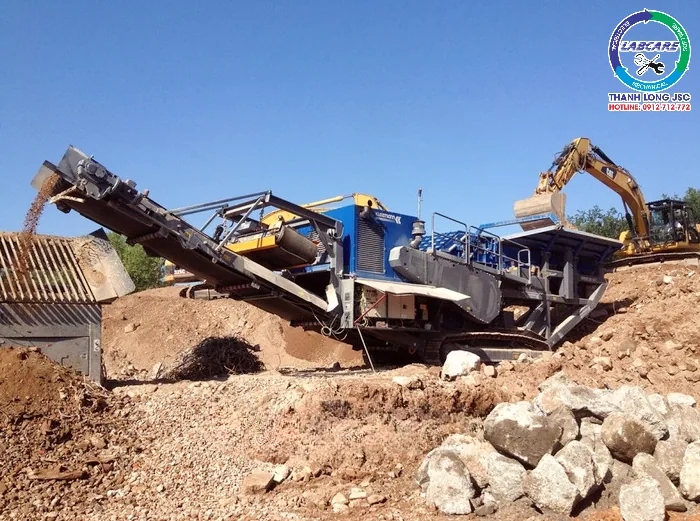
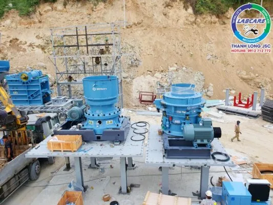
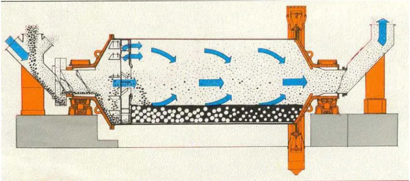
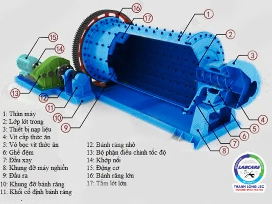
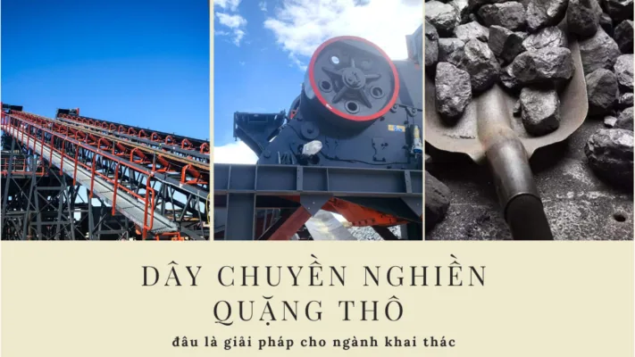
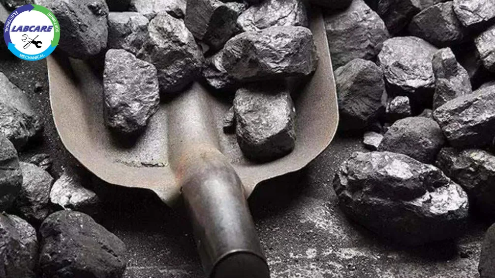
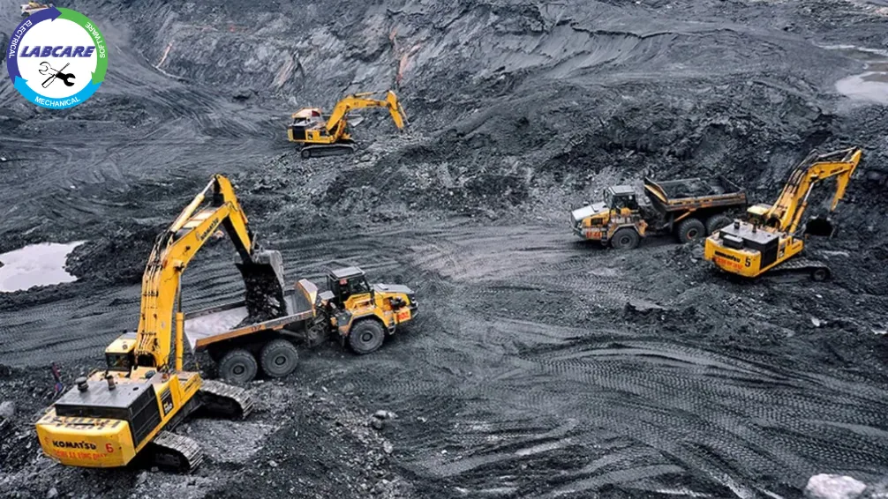
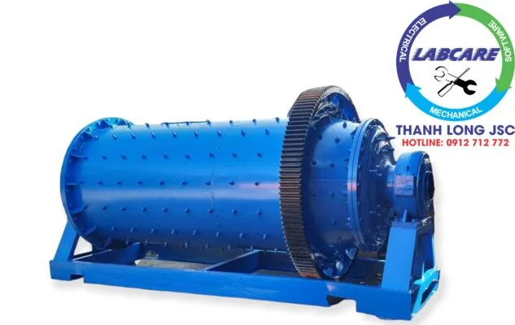

Thiết bị nghiền quặng là một hệ thống gồm nhiều máy nghiền và sàng được kết nối với nhau để thực hiện công việc nghiền quặng từ kích thước thô thành kích thước nhỏ hơn, phù hợp với yêu cầu sử dụng. Dây chuyền máy nghiền quặng được sử dụng trong nhiều ngành công nghiệp khác nhau, bao gồm khai thác mỏ, luyện kim, sản xuất vật liệu xây dựng,…
Cấu tạo của dây chuyền thiết bị nghiền quặng
Dây chuyền máy nghiền quặng thường bao gồm các thiết bị sau:
Máy nghiền hàm:
Đây là loại máy nghiền phổ biến nhất trong các dây chuyền nghiền quặng. Máy nghiền hàm hoạt động dựa trên nguyên lý nghiền đập, trong đó hai hàm cố định và động sẽ đập vào nhau để nghiền nhỏ quặng.

Máy nghiền côn:
Máy nghiền côn hoạt động dựa trên nguyên lý nghiền ép, trong đó một viên côn quay sẽ ép quặng vào một sàng để nghiền nhỏ.

Máy nghiền mịn:
Máy nghiền mịn được sử dụng để giảm kích thước của quặng từ vài mm xuống vài micron. Máy nghiền mịn thường có hai loại chính là máy nghiền cát và máy nghiền bi.
Máy nghiền bi:
là một loại máy nghiền được sử dụng phổ biến trong dây chuyền nghiền tuyển quặng. Máy nghiền bi hoạt động dựa trên nguyên lý nghiền đập và nghiền chà xát.
Trong quá trình nghiền, quặng được đưa vào khoang nghiền của máy, trong đó có các viên bi thép. Các viên bi thép được quay với tốc độ cao sẽ đập vào quặng, đồng thời quặng cũng bị chà xát giữa các viên bi thép và thành khoang nghiền. Quá trình này giúp quặng được nghiền nhỏ thành kích thước mong muốn.

Máy nghiền bi trong dây chuyền nghiền quặng có nhiều ưu điểm như:
- Có thể nghiền được nhiều loại quặng khác nhau, kể cả quặng cứng.
- Hiệu quả nghiền cao, sản lượng lớn.
- Chi phí vận hành thấp.
Máy nghiền bi được sử dụng trong nhiều công đoạn khác nhau của dây chuyền nghiền tuyển quặng, từ nghiền thô ban đầu đến nghiền tinh.

Máy nghiền bi trong nghiền quặng
Trong quá trình nghiền, các viên bi thép trong máy nghiền bi sẽ bị mòn dần. Do đó, cần phải bổ sung và thay thế bi nghiền định kỳ để đảm bảo hiệu quả nghiền.
Thiết bị tuyển: Thiết bị tuyển được sử dụng để tách quặng ra khỏi tạp chất. Các loại thiết bị tuyển thường được sử dụng trong dây chuyền nghiền tuyển quặng bao gồm:
Thiết bị tuyển từ: Thiết bị tuyển từ sử dụng lực từ để tách quặng ra khỏi tạp chất.
Thiết bị tuyển nổi: Thiết bị tuyển nổi sử dụng lực nổi để tách quặng ra khỏi tạp chất.

Thiết bị tuyển trọng lực: Thiết bị tuyển trọng lực sử dụng lực trọng lực để tách quặng ra khỏi tạp chất.

Tùy thuộc vào loại quặng và yêu cầu sản phẩm, dây chuyền máy nghiền quặng có thể bao gồm các thiết bị khác nhau. Ví dụ, đối với các loại quặng cứng, người ta có thể sử dụng máy nghiền búa hoặc máy nghiền xoắn. Đối với các loại quặng có chứa nhiều tạp chất, người ta có thể sử dụng máy tuyển quặng để loại bỏ tạp chất trước khi nghiền.
Dây chuyền máy nghiền quặng đóng vai trò quan trọng trong ngành khai thác mỏ. Nhờ có dây chuyền này, các nhà khai thác có thể thu hồi khoáng sản có giá trị một cách hiệu quả hơn, từ đó góp phần phát triển kinh tế.
Tương lai của dây chuyền máy nghiền quặng
Dây chuyền máy nghiền quặng là một công nghệ quan trọng trong ngành khai thác mỏ. Trong tương lai, dây chuyền này sẽ tiếp tục được phát triển để nâng cao hiệu quả và năng suất sản xuất. Một số xu hướng phát triển của dây chuyền máy nghiền quặng trong tương lai bao gồm:
- Sử dụng các vật liệu mới để chế tạo các thiết bị nghiền, giúp tăng độ bền và hiệu quả của máy nghiền.
- Áp dụng các công nghệ tự động hóa và điều khiển tiên tiến để nâng cao hiệu quả vận hành và bảo dưỡng.
- Sử dụng các công nghệ mới để giảm thiểu ô nhiễm môi trường.

Nguyên lý hoạt động của dây chuyền máy nghiền quặng
Dây chuyền máy nghiền quặng hoạt động dựa trên nguyên lý nghiền cơ học. Quặng được đưa vào máy nghiền, sau đó được nghiền nhỏ bởi các trục quay hoặc các viên bi thép. Quặng sau khi nghiền nhỏ được đưa ra khỏi máy nghiền và được sàng để phân loại theo kích thước. Quặng đạt yêu cầu sẽ được thu lại, còn quặng không đạt yêu cầu sẽ được đưa trở lại máy nghiền để nghiền tiếp.
Ứng dụng của dây chuyền máy nghiền quặng
Dây chuyền máy nghiền quặng được ứng dụng trong nhiều ngành công nghiệp khác nhau, bao gồm:
- Khai thác mỏ: sử dụng để nghiền quặng từ kích thước thô thành kích thước nhỏ hơn. Phù hợp với yêu cầu của các quá trình luyện kim, sản xuất vật liệu xây dựng,…
- Luyện kim: được sử dụng để nghiền quặng thành các kích thước nhỏ hơn. Giúp tăng khả năng hòa tan của quặng trong quá trình luyện kim.
- Sản xuất vật liệu xây dựng: được sử dụng để nghiền nguyên liệu đá thành các kích thước nhỏ hơn. Phù hợp với yêu cầu sử dụng trong sản xuất vật liệu xây dựng, như xi măng, bê tông,…

Ưu điểm của dây chuyền máy nghiền quặng
- Tăng hiệu quả thu hồi khoáng sản: Dây chuyền máy nghiền quặng giúp giảm kích thước của quặng, từ đó giúp cho việc thu hồi khoáng sản có giá trị trở nên dễ dàng hơn.
- Nâng cao năng suất: Dây chuyền máy nghiền quặng được thiết kế để vận hành tự động, giúp nâng cao năng suất sản xuất.
- Giảm chi phí: Dây chuyền máy nghiền quặng giúp giảm chi phí vận chuyển và lưu trữ quặng.
Nhược điểm của dây chuyền máy nghiền quặng
- Chi phí đầu tư ban đầu cao: Dây chuyền máy nghiền quặng là một hệ thống thiết bị phức tạp. Do đó chi phí đầu tư ban đầu thường khá cao.
- Yêu cầu kỹ thuật cao: Dây chuyền máy nghiền quặng đòi hỏi phải có kỹ thuật vận hành và bảo dưỡng cao.
Tiêu chí lựa chọn dây chuyền máy nghiền quặng
Khi lựa chọn dây chuyền máy nghiền quặng cần quan tâm đến các tiêu chí sau:
- Loại quặng cần nghiền: Tùy thuộc vào loại quặng cần nghiền mà lựa chọn loại máy nghiền phù hợp.
- Kích thước hạt quặng đầu vào và đầu ra: Kích thước hạt quặng đầu vào và đầu ra quyết định đến loại máy nghiền và số lượng máy nghiền cần thiết.
- Năng suất nghiền: Năng suất nghiền cần phù hợp với nhu cầu sản xuất.
- Chất lượng quặng nghiền: Chất lượng quặng nghiền cần đảm bảo đáp ứng yêu cầu sử dụng.
Tóm lại, dây chuyền máy nghiền quặng là một hệ thống thiết bị quan trọng trong nhiều ngành công nghiệp khác nhau. Việc lựa chọn dây chuyền máy nghiền quặng phù hợp sẽ giúp nâng cao hiệu quả sản xuất và đảm bảo chất lượng sản
Công ty nào cung cấp máy nghiền quặng, nghiền cát nhân tạo giá tốt, máy nghiền đá, nghiền sỏi sông, báo giá chính hãng:
Công ty THANH LONG JSC chuyên cung cấp dây chuyền nghiền quặng, cát, đá. Máy nghiền côn, kẹp hàm, băng tải, sàng rung, máy nghiền VSI cát nhân tạo. Vật tư trạm nghiền chính hãng với giá tốt nhất. THANH LONG JSC đã lắp đặt hơn 62 trạm nghiền cát, đá và sỏi sông, cát kết, nghiền than từ công suất 50 khối/h đến 750 khối/h. Hãy gọi sdt: 091- 2712- 772 để được tư vấn giải pháp đầu tư tiết kiệm và hiệu quả nhất.